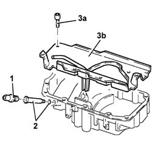

1020A46 Crankcase oil sump BULKHEAD - R.R. with crankcase sump removed
- Path
- Procedures > 10 ENGINE > 1020 CRANKCASE SUMP AND COVERS > 1020A CRANKCASE OIL SUMP > 1020A46 Crankcase oil sump BULKHEAD - R.R. with crankcase sump removed
- Kind
- repair procedure (removal / refitting; the operation number is the code)
- Applies to
- engines: 2.4 JTD 10V; all production periods
- Interactive page
- https://sloeber94.github.io/elrnDB-lThss/en/#/75584
Applies to: all engines; all production periods
 Removing
Removing
 Refitting
Refitting1. Remove the sump oil return pipe connector.
2. Remove the sump condensation oil return inner connector complete with O-Ring.
3. Undo the fixing bolts (3a) and remove the sump bulkhead (3b) fastened to the oil sump.

Applies to: all engines; all production periods
Refitting
Removing- Fit the bulkhead and tighten the bolts fixing it to the engine oil sump.
 | Value - daNm | Fastening | Component | Ø |
|---|---|---|---|---|
. | 0.8 ÷ 1.0 | Bolt | CRANKCASE OIL SUMP PARTITION | M6 |
- Fit the sump condensation oil return inner connector replacing the O-Ring.
- Fit the sump oil return pipe connector.